How to move a tribe or a player from one map to another, from the first scan to the box in their hands.
How a migration works
- Scan a tribe or a player on the map they are leaving. Nothing is changed.
- Start the migration. The server collects their items, removes them from the map and stores them.
- Give the box to its owner. They place it on any map of the cluster and take their items out.
The mod needs no setup. Install it on every map of the cluster. Maps that share the same -clusterid and cluster folder share boxes, stored items and settings. A single server works the same way.
Do the migration on the map the items are on. The box can then be given and placed on any map.
Open the admin panel

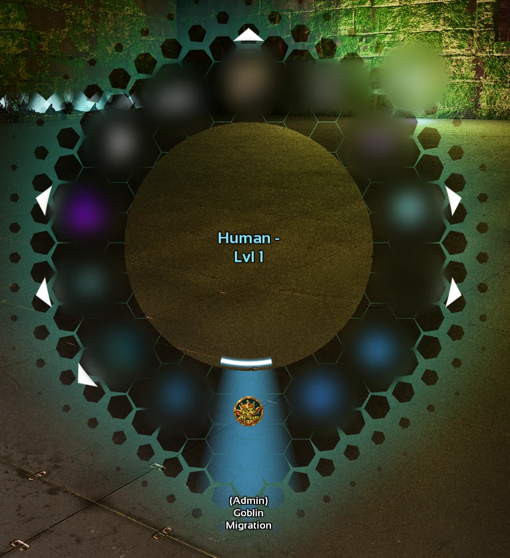
- Log in as an ARK admin (
enablecheats). - Hold your radial wheel key and pick the (Admin) Goblin Migration entry.
Only admins see the entry. The panel has five tabs: Players, Tasks, Settings, Logs and Diagnostics.
Players

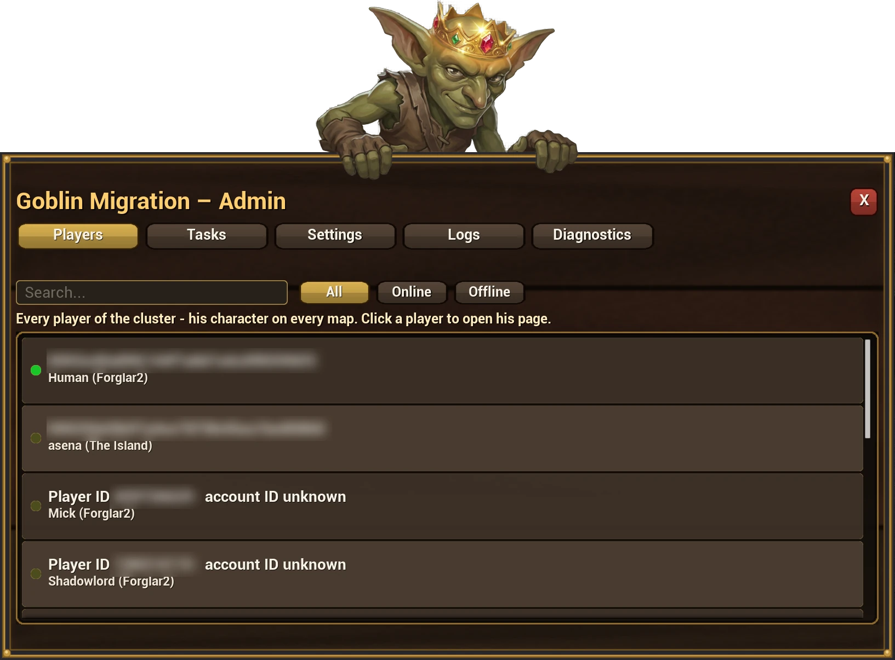
Every player known in the cluster, online or offline. Type in the search box to filter, or choose All, Online or Offline. Each row shows the account ID and the player's characters with their maps.
Click a player to open their page. It has four tabs:
- Maps: one row per map the player has a character on, with the tribe and the role there. A tribe owner or a player without a tribe has a Scan button. A tribe member is migrated from the owner's page; the row tells you whose.
- Scans: finished and running scans.
- Jobs: running and finished migrations.
- Boxes: the boxes of this player or tribe.

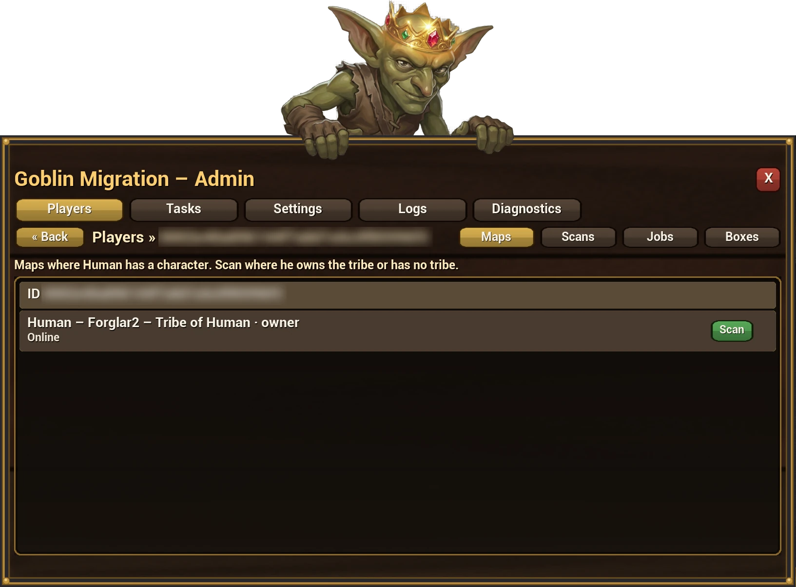
Scan

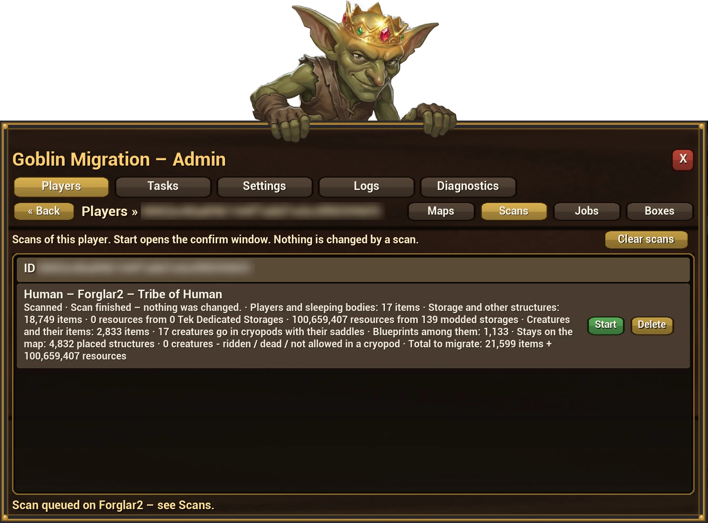
A scan counts what would be migrated. It changes nothing on the map.
- Items in player inventories and sleeping bodies, in structures, and on tamed creatures.
- Resources in Tek Dedicated Storages and in counter-style storages from other mods, shown as a separate total.
- Creatures that will go into cryopods, and creatures that will stay (ridden, dead, or not allowed in a cryopod).
- What stays on the map: placed structures.
Large tribes take a few minutes. The scan runs in small steps so the server keeps running. Scans are kept until you delete them or press Clear scans.
Start a migration

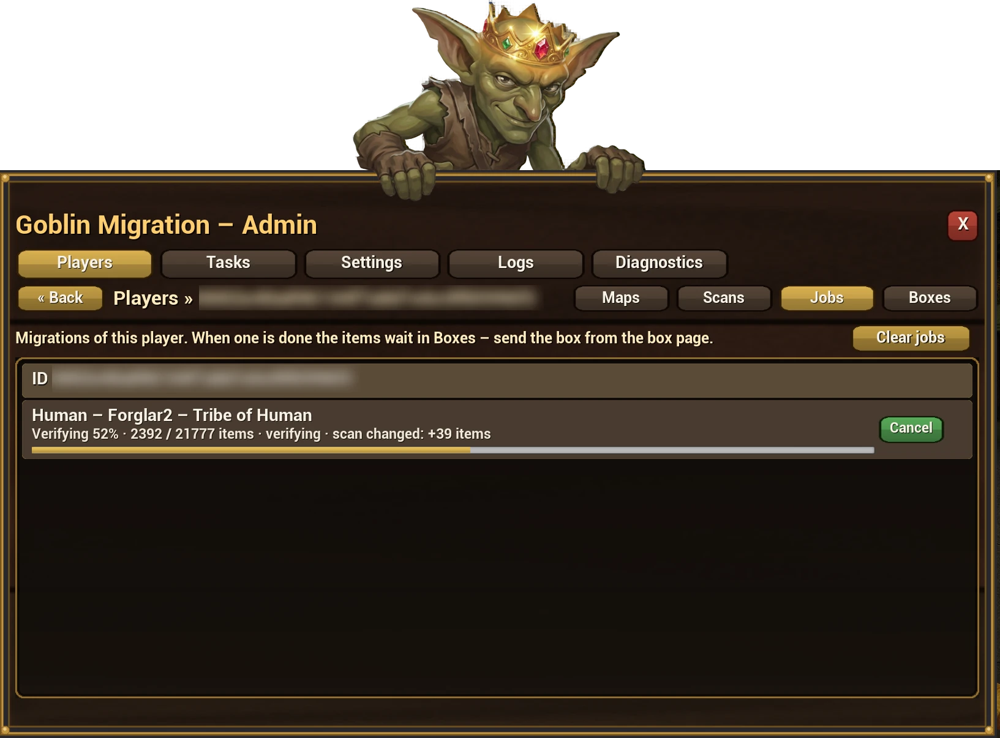
- On the Scans tab press Start on a finished scan.
- Read the confirm window and confirm.
- Follow the progress on the Jobs tab or on Tasks. You can close the panel or leave the game; the job runs on the server.
- The map changes while people play, so the job counts again when it starts. A difference from the scan is shown, not treated as an error.
- You can Cancel until removing starts. After that the job finishes.
- An item is stored only after it was really removed from the map. An item that could not be removed stays on the map and is listed in the report.
- If the server restarts during a job, the job continues after the restart from what is really on the map.

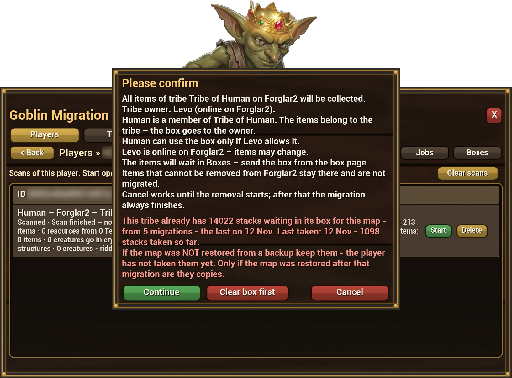
Items already waiting. If the tribe still has items waiting from an earlier migration of the same map, Start warns you and shows when they last took something. Continue adds the new items to the same box. Clear box first removes the waiting items; you must type CLEAR. Cleared items can be restored from the box page for the time set in Keep cleared items.
What is migrated
| Migrated | Stays on the map |
|---|---|
| Items in inventories of players (also sleeping), structures and tamed creatures | Placed structures |
| Tamed creatures on the map, in cryopods with their saddle | Creatures that are ridden, dead, or cannot enter a cryopod |
| Cryopods and Dino Depot balls with their creatures | Engrams |
| Contents of Tek Dedicated Storages and counter-style mod storages | Items the game does not allow to be dropped (bound skins, the implant) |
| Blueprints, Element, artifacts, tribute items, trophies, items of other mods | Wild creatures |
Resources that spoil (meat, berries) lose a little while a long job runs. The storage is emptied and the box receives the amount that was collected.
Boxes

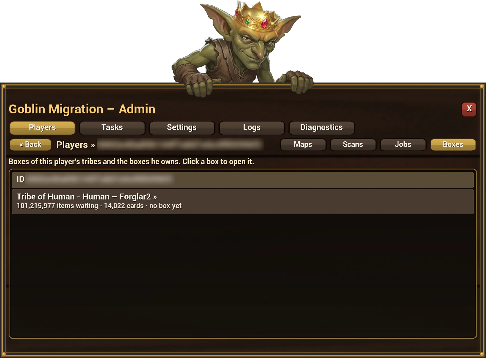

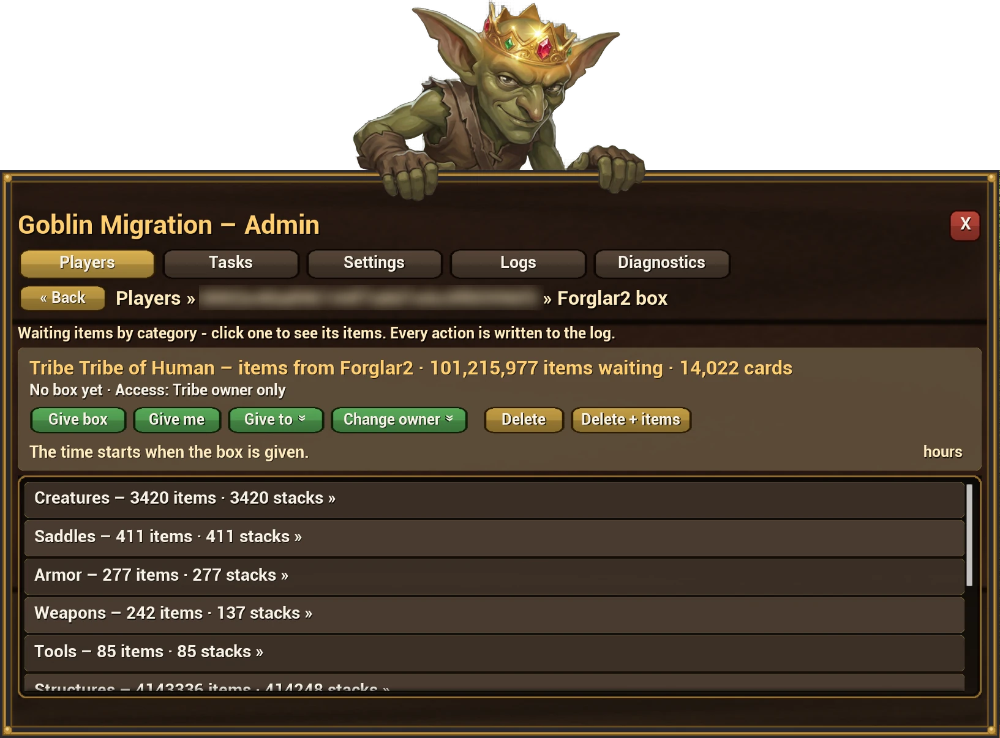
The Boxes tab of a player lists their boxes: how many items and cards are waiting and the state of the box. Click a box to open its page.
- Information: owner, source map, time left, where the box is placed, who may use it.
- Waiting items by category, to look at only.
- Give to: gives the box to its owner. If the owner is online on another map of the cluster, the box arrives there. If they are offline, it arrives when they join.
- Give me: gives the box to you, paused, so you can hand it over yourself.
- Change owner: assigns the box to another player or tribe.
- Time: add or remove hours and days, or set an exact time.
- Pick Up and Demolish work from any distance on a placed box. The stored items are not touched.
- Delete removes the box and keeps the items, so a new box can be given. Delete + items removes both.
- Restore cleared: brings back items removed with Clear box first.
A tribe has one valid box per source map. Giving a new one makes the old one disappear.
Tasks

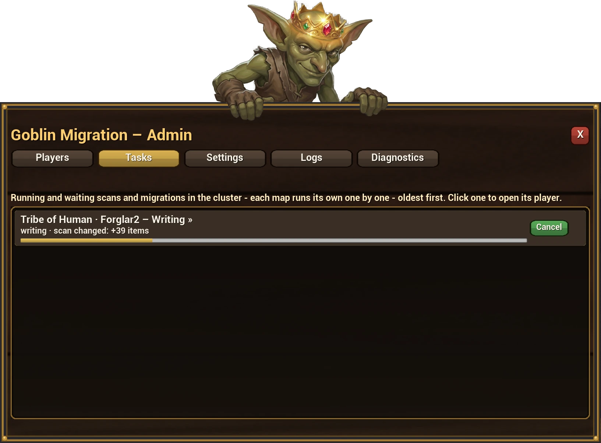
Every scan and migration running anywhere in the cluster, for all admins. Click a row to jump to that player's page.
Settings
Settings apply to the whole cluster. Change the values and press Save. Leaving the tab with unsaved changes asks first.
| Setting | What it does |
|---|---|
| Placement time | How long a given box may stay unplaced. Starts when the box is given. |
| Use time | How long a placed box stays. Starts at the first placement. |
| Lifetime check period | How often the boxes' times are checked. |
| Box leaves after the last item | Delay before an empty box rises and explodes. |
| Tribe owners can change box access | On: the owner sees the gear button in the box window. Off: every box is owner only. |
| Storage scan interval | How often old box items left in storages are removed. 0 = only when a box is deleted. |
| Explosion effect | The box rises and explodes when it leaves. |
| Box sounds volume | Launch and explosion sounds, 0 to 100. |
| Notify the player when a box arrives | A notice on the player's screen. |
| Max waiting time for items without a box | Stored items whose box was never given are removed after this time. |
| Log retention | Log lines older than this many days are removed. 0 = no day limit; the newest 5000 lines stay. |
| Stop Take all at the weight limit | Take all and Take category stop when the player cannot carry more. A single Take always takes. |
| Dedicated storage range | How far from the box Send to Dedicated Storage looks for the tribe's storages, in meters. 0 = no limit. |
| Send to range | How far from the box Send to... looks for the tribe's structures, in meters. 0 = the whole map. |
| Save the world after a migration | Saves the map right after the items left it, so a crash cannot bring them back. The server pauses for a moment. |
| Keep cleared items | How long items removed with Clear box first can be restored. |

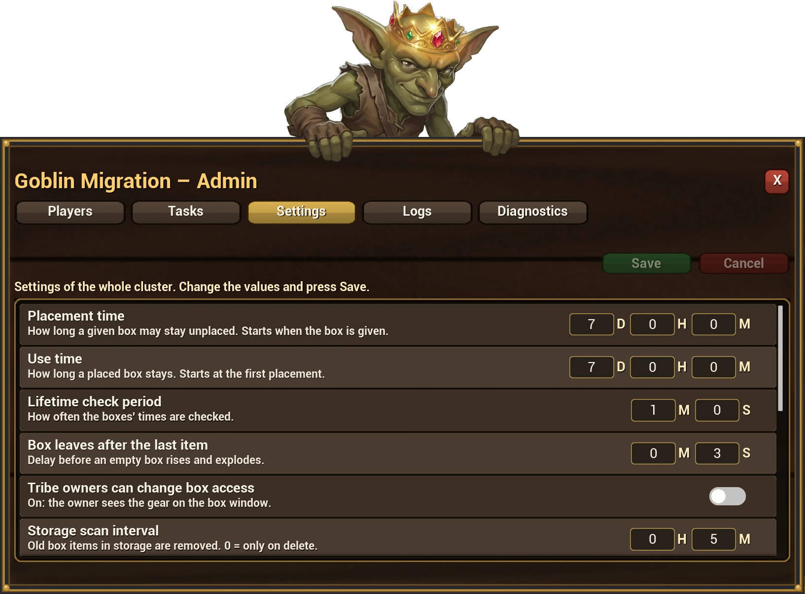

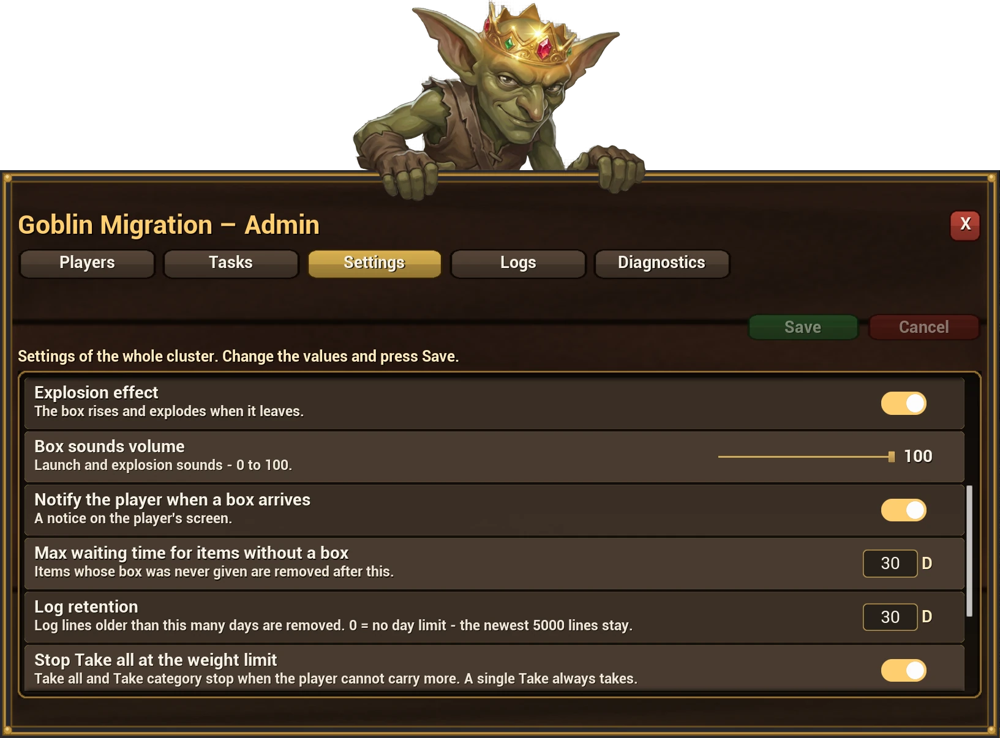

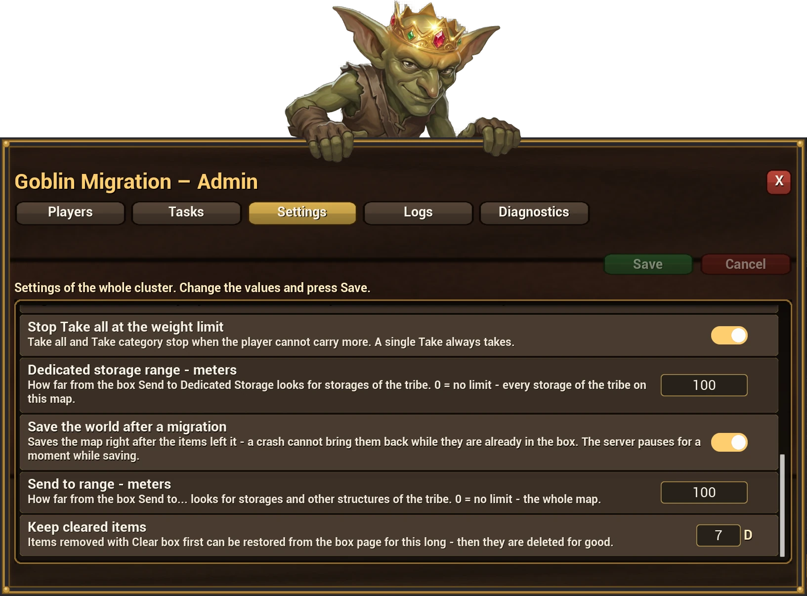
Logs

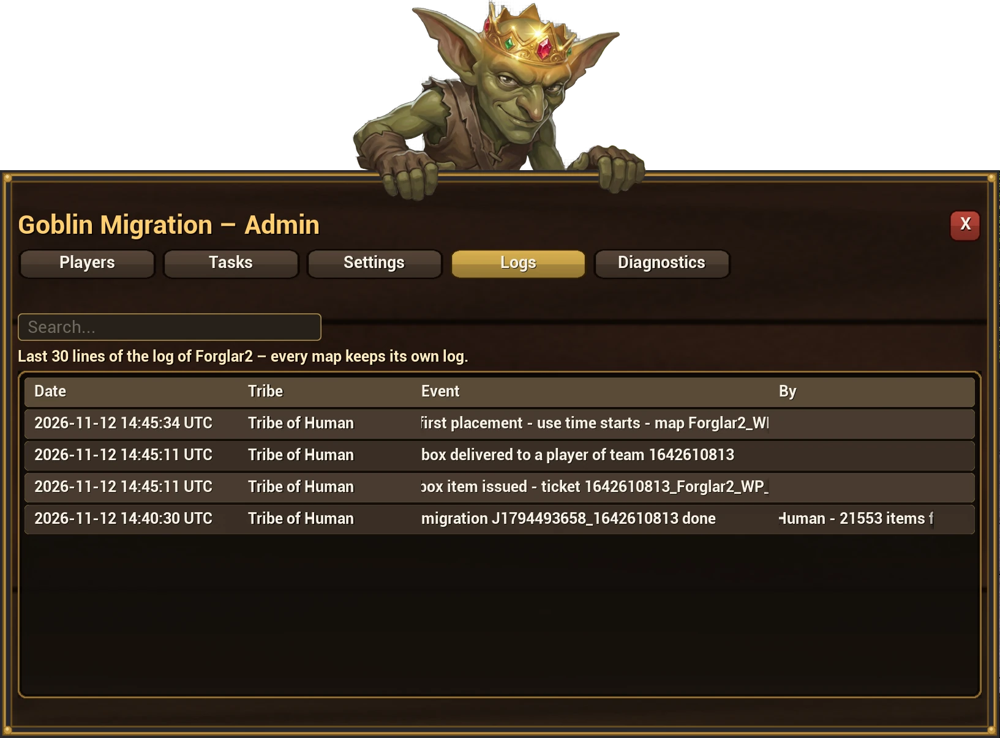
What was done on this map: scans, migrations, boxes given, time changes, deletions, with the date, the tribe and the admin. The newest lines are on top. Old lines are removed by the Log retention setting.
Diagnostics and support

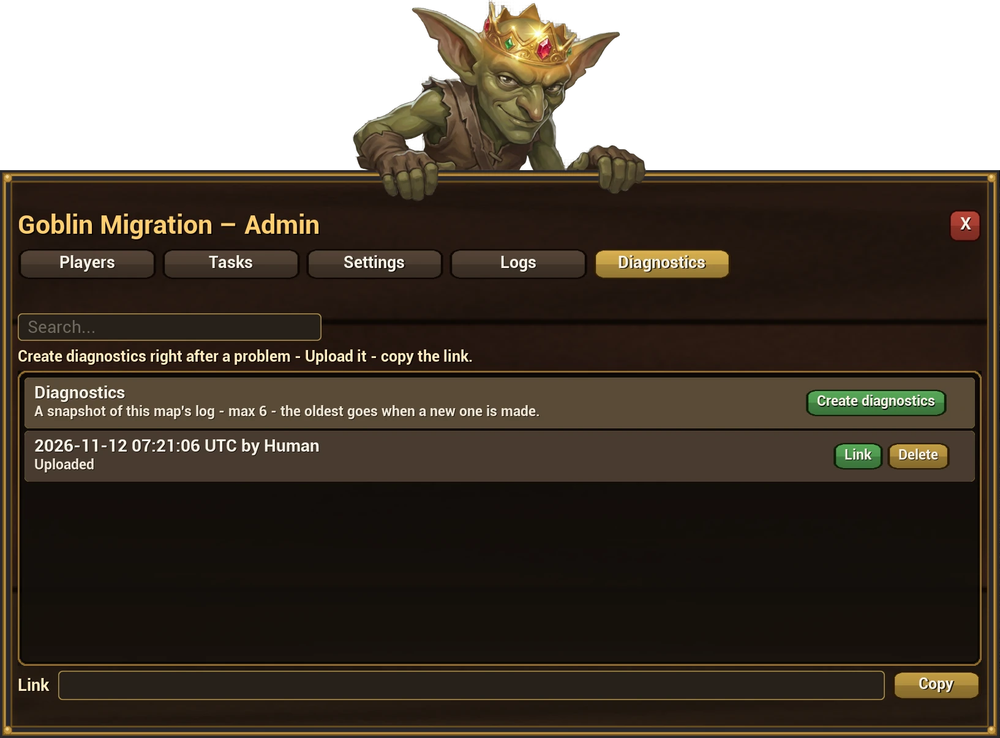
- Open the Diagnostics tab and press Create.
- Copy the link from the Link box.
- Open a ticket in the Goblin Item Migration area of the Mod Goblins Discord and add the link.
The file holds the mod's own records of the last scans and jobs: what was taken, what was skipped and why. It has no passwords.
Good to know
- Migrate while the tribe is offline if you can. Items that players move during a job are simply counted as they are at that moment.
- A member of a tribe is migrated with the tribe, from the owner's page.
- The mod uses only base-game content. No DLC is required.
- Works on PC and consoles.